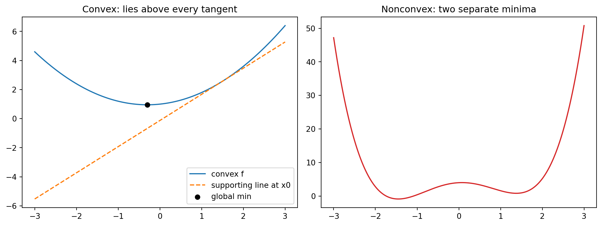

Optimization sits at the center of modern machine learning. Every time we fit a model, we are searching a high dimensional space for parameters that minimize some measure of error. The difficulty of that search depends almost entirely on the shape of the objective function. A small but profoundly important class of problems, the convex problems, have a shape that makes the search tractable, reliable, and well understood. This chapter develops the theory of convex optimization from the ground up, explains why convex problems behave so well, introduces Lagrangian duality, and then takes an honest look at where convexity actually shows up in machine learning and where it stubbornly does not.
46.1 1. Convex Sets
46.1.1 1.1 Definition and intuition
A set \(C \subseteq \mathbb{R}^n\) is convex if, for any two points in the set, the entire line segment joining them also lies in the set. Formally, \(C\) is convex when
\[
x, y \in C, \quad \theta \in [0, 1] \quad \Longrightarrow \quad \theta x + (1 - \theta) y \in C.
\]
The expression \(\theta x + (1 - \theta) y\) is a convex combination of \(x\) and \(y\). As \(\theta\) sweeps from \(0\) to \(1\), it traces the straight segment from \(y\) to \(x\). The geometric picture is simple. A disk, a filled ellipse, a cube, and a half space are all convex. A crescent, an annulus, and a star shape are not, because you can find two points inside them whose connecting segment pokes outside.
This idea extends to convex combinations of many points. Given points \(x_1, \ldots, x_k\) and weights \(\theta_i \geq 0\) with \(\sum_i \theta_i = 1\), the point \(\sum_i \theta_i x_i\) is a convex combination. The convex hull of a set is the collection of all convex combinations of its points, and it is the smallest convex set containing the original.
46.1.2 1.2 Important convex sets
Several families of convex sets appear constantly. Hyperplanes \(\{x : a^\top x = b\}\) and half spaces \(\{x : a^\top x \leq b\}\) are convex. Norm balls \(\{x : \lVert x - x_0 \rVert \leq r\}\) are convex for any norm. The set of solutions to a system of linear inequalities, called a polyhedron \(\{x : Ax \leq b\}\), is convex because it is an intersection of half spaces. The probability simplex \(\{x : x_i \geq 0, \sum_i x_i = 1\}\), which describes all discrete distributions over \(n\) outcomes, is convex.
A more advanced example is the set of symmetric positive semidefinite matrices, the positive semidefinite cone \(\mathbb{S}^n_+\). A symmetric matrix \(X\) is in this cone when \(z^\top X z \geq 0\) for all \(z\). This set is convex, and it underlies semidefinite programming, a powerful generalization of linear programming.
46.1.3 1.3 Operations that preserve convexity
Convexity is robust under several operations, which lets us build complicated convex sets from simple ones. The intersection of any collection of convex sets is convex. This single fact explains why polyhedra are convex. Affine maps preserve convexity in both directions. If \(C\) is convex and \(f(x) = Ax + b\), then the image \(f(C)\) and the preimage \(f^{-1}(C)\) are both convex. Scaling, translation, and projection onto a subspace are all special cases. The sum \(C_1 + C_2 = \{x + y : x \in C_1, y \in C_2\}\) of two convex sets is convex. These rules give us a calculus of convexity, so that recognizing whether a set is convex often reduces to checking that it was assembled from convex pieces using convexity preserving operations.
46.2 2. Convex Functions
46.2.1 2.1 Definition
A function \(f : \mathbb{R}^n \to \mathbb{R}\) is convex if its domain is a convex set and, for all \(x, y\) in the domain and all \(\theta \in [0, 1]\),
The geometric reading is that the graph of the function lies on or below any chord connecting two of its points. The chord from \((x, f(x))\) to \((y, f(y))\) never dips below the function it spans. A function is strictly convex when the inequality is strict for \(x \neq y\) and \(\theta \in (0, 1)\), which means the graph lies strictly below the chord except at the endpoints. A function \(f\) is concave when \(-f\) is convex, so the graph lies above its chords.
There is a clean connection between convex functions and convex sets. The epigraph of \(f\), defined as
is the set of points lying on or above the graph. A function is convex if and only if its epigraph is a convex set. This equivalence lets us transfer results about convex sets directly to convex functions.
46.2.2 2.2 Jensen’s inequality
The defining inequality extends from two points to any finite convex combination, and then to expectations. If \(f\) is convex, \(x_1, \ldots, x_k\) lie in its domain, and the weights satisfy \(\theta_i \geq 0\) with \(\sum_i \theta_i = 1\), then
This is Jensen’s inequality. The proof is by induction on \(k\). The base case \(k = 2\) is exactly the definition of convexity. For the inductive step, assume the claim for \(k - 1\) points. Given \(k\) points with weights summing to one, and assuming without loss of generality that \(\theta_k < 1\), write
The inner weights \(\theta_i / (1 - \theta_k)\) are nonnegative and sum to one, so the inner sum is a convex combination of \(k - 1\) points. Applying the definition of convexity to split off \(x_k\), and then the inductive hypothesis to the inner sum, gives
which completes the induction. Reading the weights \(\theta_i\) as a probability distribution, the inequality becomes \(f(\mathbb{E}[X]) \leq \mathbb{E}[f(X)]\) for any random variable \(X\) taking values in the domain. This probabilistic form is the version that appears throughout machine learning and information theory, underlying the evidence lower bound in variational inference, the nonnegativity of the Kullback Leibler divergence, and the concavity of entropy.
46.2.3 2.3 Examples
Many familiar functions are convex. Affine functions \(f(x) = a^\top x + b\) are both convex and concave, since their graphs are flat. Quadratics \(f(x) = \frac{1}{2} x^\top P x + q^\top x + r\) are convex exactly when \(P\) is positive semidefinite. The exponential \(e^{ax}\), the negative logarithm \(-\log x\) on positive reals, and every norm \(\lVert x \rVert\) are convex. The log sum exp function \(f(x) = \log \sum_i e^{x_i}\) is convex and serves as a smooth approximation to the maximum. On the concave side, \(\log x\) and \(\sqrt{x}\) on the positive reals are concave, which is why they appear so often in information theory and in utility models.
46.2.4 2.4 First order and second order tests for convexity
Checking convexity directly from the chord definition is awkward. When the function is differentiable, two cleaner tests are available.
The first order condition says that a differentiable function \(f\) is convex if and only if its domain is convex and
\[
f(y) \geq f(x) + \nabla f(x)^\top (y - x)
\]
for all \(x, y\) in the domain. The right side is the first order Taylor approximation of \(f\) at \(x\), which is the tangent plane. The condition states that a convex function always lies on or above each of its tangent planes. This is a powerful statement. The local information at a single point, the gradient, produces a global underestimate of the entire function. We will see shortly that this property is the engine behind the absence of spurious local minima.
To prove the first order condition, first suppose \(f\) is convex. Fix \(x, y\) in the domain and \(\theta \in (0, 1]\). Convexity gives \(f(x + \theta(y - x)) \leq (1 - \theta) f(x) + \theta f(y)\), which rearranges to
The left side is a difference quotient of \(f\) along the direction \(y - x\). Letting \(\theta \to 0^+\), the left side tends to the directional derivative \(\nabla f(x)^\top (y - x)\), so \(\nabla f(x)^\top (y - x) \leq f(y) - f(x)\), which is the claimed inequality. Conversely, suppose the tangent inequality holds everywhere. Take any \(x, y\) and let \(z = \theta x + (1 - \theta) y\). Applying the inequality from \(z\) to \(x\) and from \(z\) to \(y\),
Multiplying the first by \(\theta\), the second by \(1 - \theta\), and adding, the gradient terms cancel because \(\theta(x - z) + (1 - \theta)(y - z) = 0\), leaving \(\theta f(x) + (1 - \theta) f(y) \geq f(z)\), which is convexity.
The second order condition applies when \(f\) is twice differentiable. In that case \(f\) is convex if and only if its Hessian, the matrix of second partial derivatives \(\nabla^2 f(x)\), is positive semidefinite at every point in the domain,
\[
\nabla^2 f(x) \succeq 0 \quad \text{for all } x \in \text{dom}(f).
\]
This follows from the first order condition by reducing to one dimension. Restrict \(f\) to the line through \(x\) in direction \(z\) by defining \(\phi(t) = f(x + t z)\), so that \(\phi''(0) = z^\top \nabla^2 f(x) z\). A function on \(\mathbb{R}^n\) is convex if and only if every such restriction \(\phi\) is convex in \(t\). For a twice differentiable function of one variable, the first order condition \(\phi(s) \geq \phi(t) + \phi'(t)(s - t)\) holds for all \(s, t\) exactly when \(\phi'\) is nondecreasing, which for a differentiable \(\phi'\) means \(\phi''(t) \geq 0\) everywhere. Translating back, convexity is equivalent to \(z^\top \nabla^2 f(x) z \geq 0\) for every direction \(z\) and every point \(x\), which is precisely \(\nabla^2 f(x) \succeq 0\).
In one dimension this reduces to the familiar statement that \(f\) is convex when \(f''(x) \geq 0\) everywhere, meaning the curve bends upward. In higher dimensions the Hessian replaces the second derivative, and positive semidefiniteness, meaning \(z^\top \nabla^2 f(x) z \geq 0\) for all \(z\), is the multidimensional analogue of an upward bend in every direction. If the Hessian is positive definite everywhere, the function is strictly convex, though strict convexity does not require this everywhere.
46.2.5 2.5 Operations that preserve convexity
Just as with sets, a calculus of operations lets us certify convexity by construction. A nonnegative weighted sum of convex functions is convex, so \(\sum_i w_i f_i\) with \(w_i \geq 0\) is convex whenever each \(f_i\) is. The pointwise maximum of convex functions, \(\max_i f_i(x)\), is convex, which is why the piecewise linear function \(\max_i (a_i^\top x + b_i)\) is convex. Composition with an affine map preserves convexity, so \(f(Ax + b)\) is convex when \(f\) is. More general compositions follow rules that depend on the monotonicity and convexity of the outer function. For instance, if \(h\) is convex and nondecreasing and \(g\) is convex, then \(h(g(x))\) is convex. These rules, used systematically, form the basis of disciplined convex programming, the framework behind modeling tools such as CVXPY that let practitioners build provably convex problems out of a library of atomic functions.
where the objective \(f_0\) and the inequality constraint functions \(f_i\) are all convex, and the equality constraints are affine. The reason equality constraints must be affine is that an equality \(g(x) = 0\) defines a convex feasible set only when \(g\) is affine. The feasible set, the intersection of the sublevel sets \(\{x : f_i(x) \leq 0\}\) with the affine equality set, is convex because each piece is convex and intersection preserves convexity. So a convex problem is the minimization of a convex function over a convex set.
This template covers a great deal. Linear programs, quadratic programs, second order cone programs, and semidefinite programs are all special cases obtained by restricting the form of the objective and constraints.
46.3.2 3.2 Local minima are global minima
The defining payoff of convexity is this theorem. In a convex optimization problem, every local minimum is a global minimum. There are no spurious local minima, no suboptimal valleys to get trapped in. This is what makes convex problems tractable in a way that general nonconvex problems are not.
The proof is short and illuminating. Suppose \(x^\star\) is a local minimum, so there is a radius \(r\) such that \(f_0(x^\star) \leq f_0(z)\) for all feasible \(z\) within distance \(r\). Now take any feasible point \(y\), possibly far away, and suppose for contradiction that \(f_0(y) < f_0(x^\star)\). Consider the point \(z = \theta y + (1 - \theta) x^\star\) for a small \(\theta \in (0, 1)\). Because the feasible set is convex, \(z\) is feasible. By choosing \(\theta\) small enough, we can bring \(z\) within distance \(r\) of \(x^\star\). By convexity of \(f_0\),
So \(z\) is a feasible point within distance \(r\) of \(x^\star\) with a strictly smaller objective value. This contradicts the assumption that \(x^\star\) is a local minimum. Therefore no such \(y\) exists, and \(x^\star\) is globally optimal.
The geometric intuition behind this proof is worth holding onto. Convexity forbids the function from ever curving back down once it has started rising. If you are at a local minimum and there were a deeper point elsewhere, the chord toward that deeper point would force the function nearby to dip below your current value, contradicting locality. A second view comes from the first order condition. For an unconstrained convex problem, \(x^\star\) is optimal if and only if \(\nabla f_0(x^\star) = 0\). The first order condition guarantees \(f_0(y) \geq f_0(x^\star) + \nabla f_0(x^\star)^\top (y - x^\star) = f_0(x^\star)\) for all \(y\), so a stationary point is automatically a global minimum. In nonconvex problems a vanishing gradient only certifies a stationary point, which might be a saddle or a local minimum, and the global picture is lost.
46.3.3 3.3 When the minimizer is unique
Convexity guarantees that the set of minimizers is itself a convex set, but it does not guarantee that this set is a single point. A flat bottomed convex function, such as a constant or a function with a linear valley, has many minimizers. Strict convexity is the extra ingredient that forces uniqueness. If \(f_0\) is strictly convex and a minimizer exists, it is unique. This distinction matters in machine learning, where strongly convex objectives, a quantitative strengthening of strict convexity, yield both unique solutions and fast convergence guarantees for gradient methods.
46.4 4. Lagrangian Duality
46.4.1 4.1 The Lagrangian
Constraints complicate optimization. Lagrangian duality offers a systematic way to fold constraints into the objective and, in doing so, reveals deep structure. Starting from the standard form problem, we introduce a multiplier \(\lambda_i \geq 0\) for each inequality constraint and a multiplier \(\nu_j\) for each equality constraint. The Lagrangian is
The multipliers \(\lambda\) and \(\nu\) are called dual variables. Each multiplier prices the corresponding constraint, charging a penalty when the constraint is violated and offering a credit when it is slack.
46.4.2 4.2 The dual function and weak duality
The Lagrange dual function is obtained by minimizing the Lagrangian over \(x\) for fixed multipliers,
This function has a remarkable property. For any \(\lambda \geq 0\) and any \(\nu\), the dual function is a lower bound on the optimal value \(p^\star\) of the original problem. The argument is direct. For any feasible \(x\), the inequality terms \(\lambda_i f_i(x)\) are nonpositive because \(\lambda_i \geq 0\) and \(f_i(x) \leq 0\), and the equality terms vanish because \(a_j^\top x = b_j\). So \(L(x, \lambda, \nu) \leq f_0(x)\) at every feasible \(x\), and taking the infimum over all \(x\) only lowers the value further. Hence \(g(\lambda, \nu) \leq p^\star\).
Because the dual function lower bounds the optimum for every choice of multipliers, we naturally seek the best, that is the largest, such bound. This gives the dual problem
The dual function is always concave, regardless of whether the original problem is convex, because it is a pointwise infimum of functions that are affine in \((\lambda, \nu)\). So the dual problem is always a convex problem, a maximization of a concave function over a convex set. Let \(d^\star\) denote the optimal dual value. The inequality \(d^\star \leq p^\star\) always holds and is called weak duality. The gap \(p^\star - d^\star\) is the duality gap.
46.4.3 4.3 Strong duality and the KKT conditions
Weak duality gives a bound, but the prize is strong duality, the case where \(d^\star = p^\star\) and the duality gap closes completely. Strong duality does not hold for every problem, but for convex problems it usually does. A common sufficient condition is Slater’s condition, which requires that the problem be convex and that there exist a strictly feasible point, one satisfying \(f_i(x) < 0\) for all the nonaffine inequality constraints. When Slater’s condition holds, strong duality is guaranteed, and the dual problem solves the primal exactly.
When strong duality holds and the functions are differentiable, the optimal primal and dual variables together satisfy the Karush Kuhn Tucker conditions, usually abbreviated KKT. These conditions are
Complementary slackness is especially informative. It says that for each constraint, either the multiplier is zero or the constraint is active, meaning \(f_i(x^\star) = 0\). A constraint that is not tight at the optimum carries a zero price, while a constraint that binds may carry a positive price reflecting how much the optimum would improve if that constraint were relaxed. For a convex problem with differentiable functions, the KKT conditions are not just necessary but sufficient for optimality. Any point satisfying them is a global optimum. This is why the KKT conditions are the workhorse of constrained convex optimization, underlying algorithms from interior point methods to the support vector machine.
46.4.4 4.4 Why duality matters in practice
Duality is not merely a theoretical curiosity. It gives certificates of optimality. If you have a primal feasible \(x\) and a dual feasible \((\lambda, \nu)\) with matching objective values, you have proven that \(x\) is optimal, no further search required. Duality can also transform a problem into a more tractable form. The support vector machine is the classic example. Its primal problem optimizes over weight vectors whose dimension equals the number of features, while its dual optimizes over multipliers whose number equals the number of training points and, crucially, depends on the data only through inner products. That dual structure is exactly what makes the kernel trick possible, allowing support vector machines to operate implicitly in very high dimensional feature spaces.
46.5 5. Convexity in Machine Learning
46.5.1 5.1 Where convexity appears
A surprising number of foundational machine learning methods are convex. Linear regression with squared loss minimizes \(\lVert Xw - y \rVert^2\), a convex quadratic in \(w\), with a unique solution when \(X\) has full column rank. Ridge regression adds a convex penalty \(\lambda \lVert w \rVert^2\) and stays convex while gaining a unique solution even when the data is rank deficient. The lasso adds an \(\ell_1\) penalty \(\lambda \lVert w \rVert_1\), which is convex though nondifferentiable, and remains a convex problem solvable by specialized methods.
Logistic regression minimizes the negative log likelihood of a logistic model, and that loss is convex in the parameters, so logistic regression has no spurious local minima. Support vector machines minimize a convex hinge loss plus a convex regularizer, and as discussed, their dual is a convex quadratic program. Many other methods, including certain forms of matrix completion with nuclear norm penalties and a wide range of regularized linear models, are convex by construction. For all of these, convexity delivers a comforting guarantee. Whatever optimizer you run, if it converges, it converges to the global optimum, and the solution does not depend on initialization or random seed.
46.5.2 5.2 Where convexity does not appear
Then there is deep learning, where convexity essentially vanishes. The loss surface of a neural network as a function of its weights is nonconvex, riddled with saddle points, flat regions, and many distinct minima. The culprit is composition. Even a single hidden layer with a nonlinear activation composes the parameters in a way that destroys convexity, and stacking layers compounds the effect. A simple symmetry argument shows that nonconvexity is unavoidable here. In a network with hidden units, you can permute the units within a layer, along with their incoming and outgoing weights, and obtain a different weight vector that computes exactly the same function and has exactly the same loss. So minima come in large equivalent families related by permutation, and a function with many separated equal minima cannot be convex.
It might seem that nonconvexity would doom the enterprise, yet deep networks train successfully every day. Several factors explain this. In high dimensions, the troublesome critical points tend to be saddle points rather than poor local minima, and stochastic gradient methods escape saddles effectively. Empirically, the many minima that gradient descent reaches in large overparameterized networks tend to have similar and low loss values, so the practical penalty for nonconvexity is smaller than the theory of worst cases would suggest. Overparameterization itself appears to smooth the effective landscape. None of this makes the problem convex, and there are no global optimality guarantees, but it explains why nonconvex optimization is workable in this regime.
46.5.3 5.3 The practical lesson
The boundary between convex and nonconvex marks a real divide in how we reason about machine learning systems. On the convex side, optimization is a solved problem in principle. The objective tells the whole story, the global optimum is well defined and reachable, and questions of modeling and statistics can be separated cleanly from questions of optimization. On the nonconvex side, optimization and modeling become entangled. The algorithm, its initialization, its learning rate schedule, and the implicit biases of stochastic gradient descent all shape which solution you find, and that solution influences how the model generalizes.
A useful working stance is to recognize convexity as a tool rather than a requirement. When a convex formulation captures the problem well, as it does for linear models, regularized regression, and support vector machines, you should prefer it, because you gain reliability, reproducibility, and clean theory for free. When the modeling power of deep nonlinear architectures is needed, you give up those guarantees and lean instead on the empirical reliability of modern optimizers, careful initialization, and the well documented behavior of gradient descent in overparameterized regimes. Understanding convex optimization deeply, even when working far outside the convex world, sharpens intuition about what a good loss landscape looks like, why certain regularizers help, and where the genuine difficulties of training actually lie.
46.6 6. Worked Example: Convexity in Code
The theory becomes concrete when we watch it operate. The following example contrasts a convex quadratic with a nonconvex double well. It checks the first order condition numerically by confirming the convex graph never dips below a supporting tangent line, and it demonstrates the local equals global property by running gradient descent from two hundred random starting points. On the convex function every start converges to the same minimizer; on the nonconvex function the same procedure settles into two different valleys depending on where it begins.
import numpy as npimport matplotlib.pyplot as pltrng = np.random.default_rng(0)x = np.linspace(-3.0, 3.0, 600)f_convex =0.5* x**2+0.3* x +1.0# convex: f'' = 1 > 0f_nonconvex = x**4-4.0* x**2+0.6* x +4.0# double well, two minima# Analytic minimizer of the convex quadratic: x* = -q/p.xstar =-0.3/1.0fstar =0.5* xstar**2+0.3* xstar +1.0# Supporting (tangent) line at x0; the convex graph must lie on or above it.x0 =1.5slope = x0 +0.3tangent = (0.5* x0**2+0.3* x0 +1.0) + slope * (x - x0)assert (f_convex +1e-9>= tangent).all()# Local equals global: gradient descent from many starts on the convex function.grad =lambda z: z +0.3mins = []for _ inrange(200): z = rng.uniform(-3.0, 3.0)for _ inrange(500): z = z -0.1* grad(z) mins.append(z)mins = np.array(mins)print(f"convex minimizer x* = {xstar:.4f}, f* = {fstar:.4f}")print(f"all 200 starts converged to x* (spread = {mins.std():.2e})")# Nonconvex: the reached minimum depends on initialization.grad_nc =lambda z: 4.0* z**3-8.0* z +0.6nc_mins = []for _ inrange(200): z = rng.uniform(-3.0, 3.0)for _ inrange(2000): z = z -0.005* grad_nc(z) nc_mins.append(round(z, 2))print(f"nonconvex distinct minima reached: {sorted(set(nc_mins))}")fig, ax = plt.subplots(1, 2, figsize=(11, 4.2))ax[0].plot(x, f_convex, label="convex f")ax[0].plot(x, tangent, "--", label="supporting line at x0")ax[0].scatter([xstar], [fstar], color="k", zorder=5, label="global min")ax[0].set_title("Convex: lies above every tangent")ax[0].legend()ax[1].plot(x, f_nonconvex, color="C3")ax[1].set_title("Nonconvex: two separate minima")fig.tight_layout()plt.show()
convex minimizer x* = -0.3000, f* = 0.9550
all 200 starts converged to x* (spread = 2.78e-16)
nonconvex distinct minima reached: [-1.45, 1.38]

The output confirms both predictions. Every random start on the convex function lands on the same minimizer to machine precision, while the nonconvex function traps gradient descent in two distinct minima.
usingRandom, Statisticsrng =MersenneTwister(0)# Analytic minimizer of the convex quadratic f(x) = 0.5 x^2 + 0.3 x + 1.xstar =-0.3/1.0fstar =0.5* xstar^2+0.3* xstar +1.0# Gradient descent from many starts converges to the same point.grad(z) = z +0.3mins =Float64[]for _ in1:200 z =6.0*rand(rng) -3.0for _ in1:500 z -=0.1*grad(z)endpush!(mins, z)endprintln("convex minimizer x* = ", round(xstar, digits=4))println("spread across 200 starts = ", std(mins))
// Illustrative: gradient descent on the convex quadratic// f(x) = 0.5 x^2 + 0.3 x + 1, whose unique minimizer is x* = -0.3.fn grad(z:f64) ->f64{ z +0.3}fn main() {let xstar =-0.3_f64;let starts = [-3.0,-1.0,0.5,2.7];for&s in starts.iter() {letmut z = s;for _ in0..500{ z -=0.1* grad(z);}// Every start converges to the same global minimum.println!("start {:>5.1} -> {:.4} (x* = {:.4})", s, z, xstar);}}
46.7 References
Boyd, S. and Vandenberghe, L. Convex Optimization. Cambridge University Press, 2004. https://doi.org/10.1017/CBO9780511804441
Nocedal, J. and Wright, S. Numerical Optimization, 2nd edition. Springer, 2006. https://doi.org/10.1007/978-0-387-40065-5
Rockafellar, R. T. Convex Analysis. Princeton University Press, 1970. https://doi.org/10.1515/9781400873173
Bubeck, S. Convex Optimization: Algorithms and Complexity. Foundations and Trends in Machine Learning, 8(3-4), 2015. https://doi.org/10.1561/2200000050
Diamond, S. and Boyd, S. CVXPY: A Python-Embedded Modeling Language for Convex Optimization. Journal of Machine Learning Research, 17(83), 2016. https://www.jmlr.org/papers/v17/15-408.html
Dauphin, Y., Pascanu, R., Gulcehre, C., Cho, K., Ganguli, S., and Bengio, Y. Identifying and Attacking the Saddle Point Problem in High-Dimensional Non-Convex Optimization. Advances in Neural Information Processing Systems, 2014. https://doi.org/10.48550/arXiv.1406.2572
Choromanska, A., Henaff, M., Mathieu, M., Arous, G. B., and LeCun, Y. The Loss Surfaces of Multilayer Networks. Proceedings of AISTATS, 2015. https://doi.org/10.48550/arXiv.1412.0233
Cortes, C. and Vapnik, V. Support-Vector Networks. Machine Learning, 20(3), 1995. https://doi.org/10.1007/BF00994018
Source Code
# Convex OptimizationOptimization sits at the center of modern machine learning. Every time we fit a model, we are searching a high dimensional space for parameters that minimize some measure of error. The difficulty of that search depends almost entirely on the shape of the objective function. A small but profoundly important class of problems, the convex problems, have a shape that makes the search tractable, reliable, and well understood. This chapter develops the theory of convex optimization from the ground up, explains why convex problems behave so well, introduces Lagrangian duality, and then takes an honest look at where convexity actually shows up in machine learning and where it stubbornly does not.## 1. Convex Sets### 1.1 Definition and intuitionA set $C \subseteq \mathbb{R}^n$ is convex if, for any two points in the set, the entire line segment joining them also lies in the set. Formally, $C$ is convex when$$x, y \in C, \quad \theta \in [0, 1] \quad \Longrightarrow \quad \theta x + (1 - \theta) y \in C.$$The expression $\theta x + (1 - \theta) y$ is a convex combination of $x$ and $y$. As $\theta$ sweeps from $0$ to $1$, it traces the straight segment from $y$ to $x$. The geometric picture is simple. A disk, a filled ellipse, a cube, and a half space are all convex. A crescent, an annulus, and a star shape are not, because you can find two points inside them whose connecting segment pokes outside.This idea extends to convex combinations of many points. Given points $x_1, \ldots, x_k$ and weights $\theta_i \geq 0$ with $\sum_i \theta_i = 1$, the point $\sum_i \theta_i x_i$ is a convex combination. The convex hull of a set is the collection of all convex combinations of its points, and it is the smallest convex set containing the original.### 1.2 Important convex setsSeveral families of convex sets appear constantly. Hyperplanes $\{x : a^\top x = b\}$ and half spaces $\{x : a^\top x \leq b\}$ are convex. Norm balls $\{x : \lVert x - x_0 \rVert \leq r\}$ are convex for any norm. The set of solutions to a system of linear inequalities, called a polyhedron $\{x : Ax \leq b\}$, is convex because it is an intersection of half spaces. The probability simplex $\{x : x_i \geq 0, \sum_i x_i = 1\}$, which describes all discrete distributions over $n$ outcomes, is convex.A more advanced example is the set of symmetric positive semidefinite matrices, the positive semidefinite cone $\mathbb{S}^n_+$. A symmetric matrix $X$ is in this cone when $z^\top X z \geq 0$ for all $z$. This set is convex, and it underlies semidefinite programming, a powerful generalization of linear programming.### 1.3 Operations that preserve convexityConvexity is robust under several operations, which lets us build complicated convex sets from simple ones. The intersection of any collection of convex sets is convex. This single fact explains why polyhedra are convex. Affine maps preserve convexity in both directions. If $C$ is convex and $f(x) = Ax + b$, then the image $f(C)$ and the preimage $f^{-1}(C)$ are both convex. Scaling, translation, and projection onto a subspace are all special cases. The sum $C_1 + C_2 = \{x + y : x \in C_1, y \in C_2\}$ of two convex sets is convex. These rules give us a calculus of convexity, so that recognizing whether a set is convex often reduces to checking that it was assembled from convex pieces using convexity preserving operations.## 2. Convex Functions### 2.1 DefinitionA function $f : \mathbb{R}^n \to \mathbb{R}$ is convex if its domain is a convex set and, for all $x, y$ in the domain and all $\theta \in [0, 1]$,$$f(\theta x + (1 - \theta) y) \leq \theta f(x) + (1 - \theta) f(y).$$The geometric reading is that the graph of the function lies on or below any chord connecting two of its points. The chord from $(x, f(x))$ to $(y, f(y))$ never dips below the function it spans. A function is strictly convex when the inequality is strict for $x \neq y$ and $\theta \in (0, 1)$, which means the graph lies strictly below the chord except at the endpoints. A function $f$ is concave when $-f$ is convex, so the graph lies above its chords.There is a clean connection between convex functions and convex sets. The epigraph of $f$, defined as$$\text{epi}(f) = \{(x, t) : x \in \text{dom}(f), \; f(x) \leq t\},$$is the set of points lying on or above the graph. A function is convex if and only if its epigraph is a convex set. This equivalence lets us transfer results about convex sets directly to convex functions.### 2.2 Jensen's inequalityThe defining inequality extends from two points to any finite convex combination, and then to expectations. If $f$ is convex, $x_1, \ldots, x_k$ lie in its domain, and the weights satisfy $\theta_i \geq 0$ with $\sum_i \theta_i = 1$, then$$f\left( \sum_{i=1}^k \theta_i x_i \right) \leq \sum_{i=1}^k \theta_i f(x_i).$$This is Jensen's inequality. The proof is by induction on $k$. The base case $k = 2$ is exactly the definition of convexity. For the inductive step, assume the claim for $k - 1$ points. Given $k$ points with weights summing to one, and assuming without loss of generality that $\theta_k < 1$, write$$\sum_{i=1}^k \theta_i x_i = \theta_k x_k + (1 - \theta_k) \sum_{i=1}^{k-1} \frac{\theta_i}{1 - \theta_k} x_i.$$The inner weights $\theta_i / (1 - \theta_k)$ are nonnegative and sum to one, so the inner sum is a convex combination of $k - 1$ points. Applying the definition of convexity to split off $x_k$, and then the inductive hypothesis to the inner sum, gives$$f\left( \sum_{i=1}^k \theta_i x_i \right) \leq \theta_k f(x_k) + (1 - \theta_k) \sum_{i=1}^{k-1} \frac{\theta_i}{1 - \theta_k} f(x_i) = \sum_{i=1}^k \theta_i f(x_i),$$which completes the induction. Reading the weights $\theta_i$ as a probability distribution, the inequality becomes $f(\mathbb{E}[X]) \leq \mathbb{E}[f(X)]$ for any random variable $X$ taking values in the domain. This probabilistic form is the version that appears throughout machine learning and information theory, underlying the evidence lower bound in variational inference, the nonnegativity of the Kullback Leibler divergence, and the concavity of entropy.### 2.3 ExamplesMany familiar functions are convex. Affine functions $f(x) = a^\top x + b$ are both convex and concave, since their graphs are flat. Quadratics $f(x) = \frac{1}{2} x^\top P x + q^\top x + r$ are convex exactly when $P$ is positive semidefinite. The exponential $e^{ax}$, the negative logarithm $-\log x$ on positive reals, and every norm $\lVert x \rVert$ are convex. The log sum exp function $f(x) = \log \sum_i e^{x_i}$ is convex and serves as a smooth approximation to the maximum. On the concave side, $\log x$ and $\sqrt{x}$ on the positive reals are concave, which is why they appear so often in information theory and in utility models.### 2.4 First order and second order tests for convexityChecking convexity directly from the chord definition is awkward. When the function is differentiable, two cleaner tests are available.The first order condition says that a differentiable function $f$ is convex if and only if its domain is convex and$$f(y) \geq f(x) + \nabla f(x)^\top (y - x)$$for all $x, y$ in the domain. The right side is the first order Taylor approximation of $f$ at $x$, which is the tangent plane. The condition states that a convex function always lies on or above each of its tangent planes. This is a powerful statement. The local information at a single point, the gradient, produces a global underestimate of the entire function. We will see shortly that this property is the engine behind the absence of spurious local minima.To prove the first order condition, first suppose $f$ is convex. Fix $x, y$ in the domain and $\theta \in (0, 1]$. Convexity gives $f(x + \theta(y - x)) \leq (1 - \theta) f(x) + \theta f(y)$, which rearranges to$$\frac{f(x + \theta(y - x)) - f(x)}{\theta} \leq f(y) - f(x).$$The left side is a difference quotient of $f$ along the direction $y - x$. Letting $\theta \to 0^+$, the left side tends to the directional derivative $\nabla f(x)^\top (y - x)$, so $\nabla f(x)^\top (y - x) \leq f(y) - f(x)$, which is the claimed inequality. Conversely, suppose the tangent inequality holds everywhere. Take any $x, y$ and let $z = \theta x + (1 - \theta) y$. Applying the inequality from $z$ to $x$ and from $z$ to $y$,$$f(x) \geq f(z) + \nabla f(z)^\top (x - z), \qquad f(y) \geq f(z) + \nabla f(z)^\top (y - z).$$Multiplying the first by $\theta$, the second by $1 - \theta$, and adding, the gradient terms cancel because $\theta(x - z) + (1 - \theta)(y - z) = 0$, leaving $\theta f(x) + (1 - \theta) f(y) \geq f(z)$, which is convexity.The second order condition applies when $f$ is twice differentiable. In that case $f$ is convex if and only if its Hessian, the matrix of second partial derivatives $\nabla^2 f(x)$, is positive semidefinite at every point in the domain,$$\nabla^2 f(x) \succeq 0 \quad \text{for all } x \in \text{dom}(f).$$This follows from the first order condition by reducing to one dimension. Restrict $f$ to the line through $x$ in direction $z$ by defining $\phi(t) = f(x + t z)$, so that $\phi''(0) = z^\top \nabla^2 f(x) z$. A function on $\mathbb{R}^n$ is convex if and only if every such restriction $\phi$ is convex in $t$. For a twice differentiable function of one variable, the first order condition $\phi(s) \geq \phi(t) + \phi'(t)(s - t)$ holds for all $s, t$ exactly when $\phi'$ is nondecreasing, which for a differentiable $\phi'$ means $\phi''(t) \geq 0$ everywhere. Translating back, convexity is equivalent to $z^\top \nabla^2 f(x) z \geq 0$ for every direction $z$ and every point $x$, which is precisely $\nabla^2 f(x) \succeq 0$.In one dimension this reduces to the familiar statement that $f$ is convex when $f''(x) \geq 0$ everywhere, meaning the curve bends upward. In higher dimensions the Hessian replaces the second derivative, and positive semidefiniteness, meaning $z^\top \nabla^2 f(x) z \geq 0$ for all $z$, is the multidimensional analogue of an upward bend in every direction. If the Hessian is positive definite everywhere, the function is strictly convex, though strict convexity does not require this everywhere.### 2.5 Operations that preserve convexityJust as with sets, a calculus of operations lets us certify convexity by construction. A nonnegative weighted sum of convex functions is convex, so $\sum_i w_i f_i$ with $w_i \geq 0$ is convex whenever each $f_i$ is. The pointwise maximum of convex functions, $\max_i f_i(x)$, is convex, which is why the piecewise linear function $\max_i (a_i^\top x + b_i)$ is convex. Composition with an affine map preserves convexity, so $f(Ax + b)$ is convex when $f$ is. More general compositions follow rules that depend on the monotonicity and convexity of the outer function. For instance, if $h$ is convex and nondecreasing and $g$ is convex, then $h(g(x))$ is convex. These rules, used systematically, form the basis of disciplined convex programming, the framework behind modeling tools such as CVXPY that let practitioners build provably convex problems out of a library of atomic functions.## 3. Convex Optimization Problems### 3.1 Standard formA convex optimization problem has the form$$\begin{aligned}\text{minimize} \quad & f_0(x) \\\text{subject to} \quad & f_i(x) \leq 0, \quad i = 1, \ldots, m, \\& a_j^\top x = b_j, \quad j = 1, \ldots, p,\end{aligned}$$where the objective $f_0$ and the inequality constraint functions $f_i$ are all convex, and the equality constraints are affine. The reason equality constraints must be affine is that an equality $g(x) = 0$ defines a convex feasible set only when $g$ is affine. The feasible set, the intersection of the sublevel sets $\{x : f_i(x) \leq 0\}$ with the affine equality set, is convex because each piece is convex and intersection preserves convexity. So a convex problem is the minimization of a convex function over a convex set.This template covers a great deal. Linear programs, quadratic programs, second order cone programs, and semidefinite programs are all special cases obtained by restricting the form of the objective and constraints.### 3.2 Local minima are global minimaThe defining payoff of convexity is this theorem. In a convex optimization problem, every local minimum is a global minimum. There are no spurious local minima, no suboptimal valleys to get trapped in. This is what makes convex problems tractable in a way that general nonconvex problems are not.The proof is short and illuminating. Suppose $x^\star$ is a local minimum, so there is a radius $r$ such that $f_0(x^\star) \leq f_0(z)$ for all feasible $z$ within distance $r$. Now take any feasible point $y$, possibly far away, and suppose for contradiction that $f_0(y) < f_0(x^\star)$. Consider the point $z = \theta y + (1 - \theta) x^\star$ for a small $\theta \in (0, 1)$. Because the feasible set is convex, $z$ is feasible. By choosing $\theta$ small enough, we can bring $z$ within distance $r$ of $x^\star$. By convexity of $f_0$,$$f_0(z) \leq \theta f_0(y) + (1 - \theta) f_0(x^\star) < \theta f_0(x^\star) + (1 - \theta) f_0(x^\star) = f_0(x^\star).$$So $z$ is a feasible point within distance $r$ of $x^\star$ with a strictly smaller objective value. This contradicts the assumption that $x^\star$ is a local minimum. Therefore no such $y$ exists, and $x^\star$ is globally optimal.The geometric intuition behind this proof is worth holding onto. Convexity forbids the function from ever curving back down once it has started rising. If you are at a local minimum and there were a deeper point elsewhere, the chord toward that deeper point would force the function nearby to dip below your current value, contradicting locality. A second view comes from the first order condition. For an unconstrained convex problem, $x^\star$ is optimal if and only if $\nabla f_0(x^\star) = 0$. The first order condition guarantees $f_0(y) \geq f_0(x^\star) + \nabla f_0(x^\star)^\top (y - x^\star) = f_0(x^\star)$ for all $y$, so a stationary point is automatically a global minimum. In nonconvex problems a vanishing gradient only certifies a stationary point, which might be a saddle or a local minimum, and the global picture is lost.### 3.3 When the minimizer is uniqueConvexity guarantees that the set of minimizers is itself a convex set, but it does not guarantee that this set is a single point. A flat bottomed convex function, such as a constant or a function with a linear valley, has many minimizers. Strict convexity is the extra ingredient that forces uniqueness. If $f_0$ is strictly convex and a minimizer exists, it is unique. This distinction matters in machine learning, where strongly convex objectives, a quantitative strengthening of strict convexity, yield both unique solutions and fast convergence guarantees for gradient methods.## 4. Lagrangian Duality### 4.1 The LagrangianConstraints complicate optimization. Lagrangian duality offers a systematic way to fold constraints into the objective and, in doing so, reveals deep structure. Starting from the standard form problem, we introduce a multiplier $\lambda_i \geq 0$ for each inequality constraint and a multiplier $\nu_j$ for each equality constraint. The Lagrangian is$$L(x, \lambda, \nu) = f_0(x) + \sum_{i=1}^m \lambda_i f_i(x) + \sum_{j=1}^p \nu_j (a_j^\top x - b_j).$$The multipliers $\lambda$ and $\nu$ are called dual variables. Each multiplier prices the corresponding constraint, charging a penalty when the constraint is violated and offering a credit when it is slack.### 4.2 The dual function and weak dualityThe Lagrange dual function is obtained by minimizing the Lagrangian over $x$ for fixed multipliers,$$g(\lambda, \nu) = \inf_x L(x, \lambda, \nu).$$This function has a remarkable property. For any $\lambda \geq 0$ and any $\nu$, the dual function is a lower bound on the optimal value $p^\star$ of the original problem. The argument is direct. For any feasible $x$, the inequality terms $\lambda_i f_i(x)$ are nonpositive because $\lambda_i \geq 0$ and $f_i(x) \leq 0$, and the equality terms vanish because $a_j^\top x = b_j$. So $L(x, \lambda, \nu) \leq f_0(x)$ at every feasible $x$, and taking the infimum over all $x$ only lowers the value further. Hence $g(\lambda, \nu) \leq p^\star$.Because the dual function lower bounds the optimum for every choice of multipliers, we naturally seek the best, that is the largest, such bound. This gives the dual problem$$\begin{aligned}\text{maximize} \quad & g(\lambda, \nu) \\\text{subject to} \quad & \lambda \geq 0.\end{aligned}$$The dual function is always concave, regardless of whether the original problem is convex, because it is a pointwise infimum of functions that are affine in $(\lambda, \nu)$. So the dual problem is always a convex problem, a maximization of a concave function over a convex set. Let $d^\star$ denote the optimal dual value. The inequality $d^\star \leq p^\star$ always holds and is called weak duality. The gap $p^\star - d^\star$ is the duality gap.### 4.3 Strong duality and the KKT conditionsWeak duality gives a bound, but the prize is strong duality, the case where $d^\star = p^\star$ and the duality gap closes completely. Strong duality does not hold for every problem, but for convex problems it usually does. A common sufficient condition is Slater's condition, which requires that the problem be convex and that there exist a strictly feasible point, one satisfying $f_i(x) < 0$ for all the nonaffine inequality constraints. When Slater's condition holds, strong duality is guaranteed, and the dual problem solves the primal exactly.When strong duality holds and the functions are differentiable, the optimal primal and dual variables together satisfy the Karush Kuhn Tucker conditions, usually abbreviated KKT. These conditions are$$\begin{aligned}& f_i(x^\star) \leq 0, \quad a_j^\top x^\star = b_j && \text{(primal feasibility)} \\& \lambda_i^\star \geq 0 && \text{(dual feasibility)} \\& \lambda_i^\star f_i(x^\star) = 0 && \text{(complementary slackness)} \\& \nabla f_0(x^\star) + \sum_i \lambda_i^\star \nabla f_i(x^\star) + \sum_j \nu_j^\star a_j = 0 && \text{(stationarity)}.\end{aligned}$$Complementary slackness is especially informative. It says that for each constraint, either the multiplier is zero or the constraint is active, meaning $f_i(x^\star) = 0$. A constraint that is not tight at the optimum carries a zero price, while a constraint that binds may carry a positive price reflecting how much the optimum would improve if that constraint were relaxed. For a convex problem with differentiable functions, the KKT conditions are not just necessary but sufficient for optimality. Any point satisfying them is a global optimum. This is why the KKT conditions are the workhorse of constrained convex optimization, underlying algorithms from interior point methods to the support vector machine.### 4.4 Why duality matters in practiceDuality is not merely a theoretical curiosity. It gives certificates of optimality. If you have a primal feasible $x$ and a dual feasible $(\lambda, \nu)$ with matching objective values, you have proven that $x$ is optimal, no further search required. Duality can also transform a problem into a more tractable form. The support vector machine is the classic example. Its primal problem optimizes over weight vectors whose dimension equals the number of features, while its dual optimizes over multipliers whose number equals the number of training points and, crucially, depends on the data only through inner products. That dual structure is exactly what makes the kernel trick possible, allowing support vector machines to operate implicitly in very high dimensional feature spaces.## 5. Convexity in Machine Learning### 5.1 Where convexity appearsA surprising number of foundational machine learning methods are convex. Linear regression with squared loss minimizes $\lVert Xw - y \rVert^2$, a convex quadratic in $w$, with a unique solution when $X$ has full column rank. Ridge regression adds a convex penalty $\lambda \lVert w \rVert^2$ and stays convex while gaining a unique solution even when the data is rank deficient. The lasso adds an $\ell_1$ penalty $\lambda \lVert w \rVert_1$, which is convex though nondifferentiable, and remains a convex problem solvable by specialized methods.Logistic regression minimizes the negative log likelihood of a logistic model, and that loss is convex in the parameters, so logistic regression has no spurious local minima. Support vector machines minimize a convex hinge loss plus a convex regularizer, and as discussed, their dual is a convex quadratic program. Many other methods, including certain forms of matrix completion with nuclear norm penalties and a wide range of regularized linear models, are convex by construction. For all of these, convexity delivers a comforting guarantee. Whatever optimizer you run, if it converges, it converges to the global optimum, and the solution does not depend on initialization or random seed.### 5.2 Where convexity does not appearThen there is deep learning, where convexity essentially vanishes. The loss surface of a neural network as a function of its weights is nonconvex, riddled with saddle points, flat regions, and many distinct minima. The culprit is composition. Even a single hidden layer with a nonlinear activation composes the parameters in a way that destroys convexity, and stacking layers compounds the effect. A simple symmetry argument shows that nonconvexity is unavoidable here. In a network with hidden units, you can permute the units within a layer, along with their incoming and outgoing weights, and obtain a different weight vector that computes exactly the same function and has exactly the same loss. So minima come in large equivalent families related by permutation, and a function with many separated equal minima cannot be convex.It might seem that nonconvexity would doom the enterprise, yet deep networks train successfully every day. Several factors explain this. In high dimensions, the troublesome critical points tend to be saddle points rather than poor local minima, and stochastic gradient methods escape saddles effectively. Empirically, the many minima that gradient descent reaches in large overparameterized networks tend to have similar and low loss values, so the practical penalty for nonconvexity is smaller than the theory of worst cases would suggest. Overparameterization itself appears to smooth the effective landscape. None of this makes the problem convex, and there are no global optimality guarantees, but it explains why nonconvex optimization is workable in this regime.### 5.3 The practical lessonThe boundary between convex and nonconvex marks a real divide in how we reason about machine learning systems. On the convex side, optimization is a solved problem in principle. The objective tells the whole story, the global optimum is well defined and reachable, and questions of modeling and statistics can be separated cleanly from questions of optimization. On the nonconvex side, optimization and modeling become entangled. The algorithm, its initialization, its learning rate schedule, and the implicit biases of stochastic gradient descent all shape which solution you find, and that solution influences how the model generalizes.A useful working stance is to recognize convexity as a tool rather than a requirement. When a convex formulation captures the problem well, as it does for linear models, regularized regression, and support vector machines, you should prefer it, because you gain reliability, reproducibility, and clean theory for free. When the modeling power of deep nonlinear architectures is needed, you give up those guarantees and lean instead on the empirical reliability of modern optimizers, careful initialization, and the well documented behavior of gradient descent in overparameterized regimes. Understanding convex optimization deeply, even when working far outside the convex world, sharpens intuition about what a good loss landscape looks like, why certain regularizers help, and where the genuine difficulties of training actually lie.## 6. Worked Example: Convexity in CodeThe theory becomes concrete when we watch it operate. The following example contrasts a convex quadratic with a nonconvex double well. It checks the first order condition numerically by confirming the convex graph never dips below a supporting tangent line, and it demonstrates the local equals global property by running gradient descent from two hundred random starting points. On the convex function every start converges to the same minimizer; on the nonconvex function the same procedure settles into two different valleys depending on where it begins.::: {.panel-tabset}## Python```{python}import numpy as npimport matplotlib.pyplot as pltrng = np.random.default_rng(0)x = np.linspace(-3.0, 3.0, 600)f_convex =0.5* x**2+0.3* x +1.0# convex: f'' = 1 > 0f_nonconvex = x**4-4.0* x**2+0.6* x +4.0# double well, two minima# Analytic minimizer of the convex quadratic: x* = -q/p.xstar =-0.3/1.0fstar =0.5* xstar**2+0.3* xstar +1.0# Supporting (tangent) line at x0; the convex graph must lie on or above it.x0 =1.5slope = x0 +0.3tangent = (0.5* x0**2+0.3* x0 +1.0) + slope * (x - x0)assert (f_convex +1e-9>= tangent).all()# Local equals global: gradient descent from many starts on the convex function.grad =lambda z: z +0.3mins = []for _ inrange(200): z = rng.uniform(-3.0, 3.0)for _ inrange(500): z = z -0.1* grad(z) mins.append(z)mins = np.array(mins)print(f"convex minimizer x* = {xstar:.4f}, f* = {fstar:.4f}")print(f"all 200 starts converged to x* (spread = {mins.std():.2e})")# Nonconvex: the reached minimum depends on initialization.grad_nc =lambda z: 4.0* z**3-8.0* z +0.6nc_mins = []for _ inrange(200): z = rng.uniform(-3.0, 3.0)for _ inrange(2000): z = z -0.005* grad_nc(z) nc_mins.append(round(z, 2))print(f"nonconvex distinct minima reached: {sorted(set(nc_mins))}")fig, ax = plt.subplots(1, 2, figsize=(11, 4.2))ax[0].plot(x, f_convex, label="convex f")ax[0].plot(x, tangent, "--", label="supporting line at x0")ax[0].scatter([xstar], [fstar], color="k", zorder=5, label="global min")ax[0].set_title("Convex: lies above every tangent")ax[0].legend()ax[1].plot(x, f_nonconvex, color="C3")ax[1].set_title("Nonconvex: two separate minima")fig.tight_layout()plt.show()```The output confirms both predictions. Every random start on the convex function lands on the same minimizer to machine precision, while the nonconvex function traps gradient descent in two distinct minima.## Julia```juliausingRandom, Statisticsrng =MersenneTwister(0)# Analytic minimizer of the convex quadratic f(x) = 0.5 x^2 + 0.3 x + 1.xstar =-0.3/1.0fstar =0.5* xstar^2+0.3* xstar +1.0# Gradient descent from many starts converges to the same point.grad(z) = z +0.3mins =Float64[]for _ in1:200 z =6.0*rand(rng) -3.0for _ in1:500 z -=0.1*grad(z)endpush!(mins, z)endprintln("convex minimizer x* = ", round(xstar, digits=4))println("spread across 200 starts = ", std(mins))```## Rust```rust// Illustrative: gradient descent on the convex quadratic//f(x) =0.5 x^2+0.3 x +1, whose unique minimizer is x*=-0.3.fn grad(z: f64) -> f64 { z +0.3}fn main() { let xstar =-0.3_f64; let starts = [-3.0, -1.0, 0.5, 2.7];for&s instarts.iter() { let mut z = s;for _ in0..500 { z -=0.1*grad(z); }// Every start converges to the same global minimum. println!("start {:>5.1} -> {:.4} (x* = {:.4})", s, z, xstar); }}```:::## References1. Boyd, S. and Vandenberghe, L. *Convex Optimization*. Cambridge University Press, 2004. https://doi.org/10.1017/CBO97805118044412. Nocedal, J. and Wright, S. *Numerical Optimization*, 2nd edition. Springer, 2006. https://doi.org/10.1007/978-0-387-40065-53. Rockafellar, R. T. *Convex Analysis*. Princeton University Press, 1970. https://doi.org/10.1515/97814008731734. Bubeck, S. Convex Optimization: Algorithms and Complexity. *Foundations and Trends in Machine Learning*, 8(3-4), 2015. https://doi.org/10.1561/22000000505. Diamond, S. and Boyd, S. CVXPY: A Python-Embedded Modeling Language for Convex Optimization. *Journal of Machine Learning Research*, 17(83), 2016. https://www.jmlr.org/papers/v17/15-408.html6. Dauphin, Y., Pascanu, R., Gulcehre, C., Cho, K., Ganguli, S., and Bengio, Y. Identifying and Attacking the Saddle Point Problem in High-Dimensional Non-Convex Optimization. *Advances in Neural Information Processing Systems*, 2014. https://doi.org/10.48550/arXiv.1406.25727. Choromanska, A., Henaff, M., Mathieu, M., Arous, G. B., and LeCun, Y. The Loss Surfaces of Multilayer Networks. *Proceedings of AISTATS*, 2015. https://doi.org/10.48550/arXiv.1412.02338. Cortes, C. and Vapnik, V. Support-Vector Networks. *Machine Learning*, 20(3), 1995. https://doi.org/10.1007/BF00994018